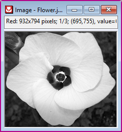
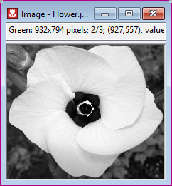
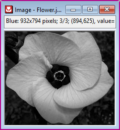

イメージ：カラー画像に統合
複数の単一チャネルイメージをカラーイメージに統合します・
必要なOriginのバージョン: Origin 2022以降
1. cvMerge order:=BRG;
スクリプトからXファンクションにアクセスする場合、追加のオプションスイッチについてのページを参照してください。
| 表示 名 |
変数 名 |
I/O と データ型 |
デフォルト 値 |
説明 |
|---|---|---|---|---|
| img |
Input/Output ImageLayer |
|
統合するシングルチャネルイメージを指定します。3または4フレーム（赤、緑、青、アルファチャンネル）の画像スタックを入力とする必要があります。 | |
| チャネルの順序 | order |
入力 文字列 |
|
統合するチャネルの順序を指定します。デフォルトでは、RGBを使用します。 |
この関数は、赤、緑、青、およびアルファチャネルの画像を指定された順序でカラー画像に統合します。詳細はこちらを確認してください。
サンプル1 チャネルイメージをカラーイメージに統合
統合されたカラー画像で元画像が置き換えられます。
|  |  |  |
計算には、OpenCVメインAPIの関数を使用します。詳細は、OpenCVメインAPIヘルプファイルバージョン2.4.11.0のimgprocをお読みください。画像処理のトピックです。mixChannels()、split()、Mat::reshape() 関数も参照してください。
OpenCV Main API Help file, Version 2.4.11.0